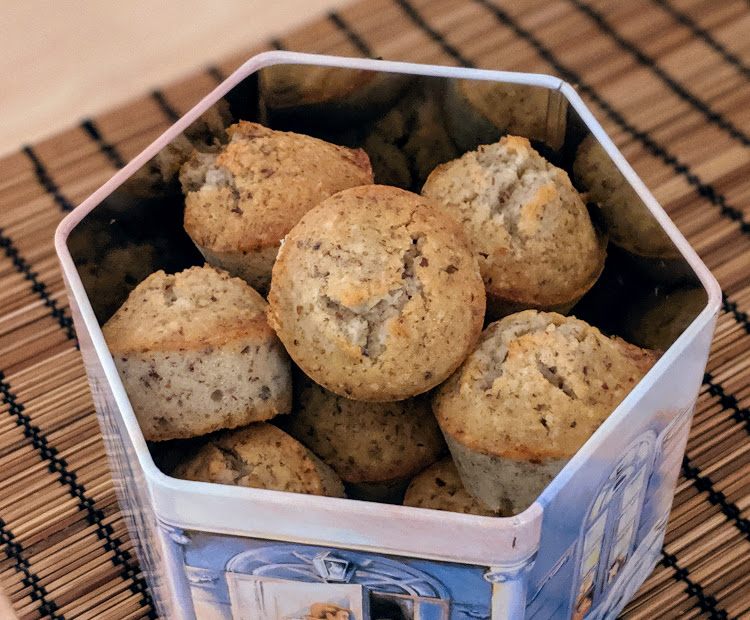

..@..♦.D.

|
Présentation 
|
Blog
|
Recettes
|

Version "cupcakes", voir remarque ci-dessous.
Pour 6 parts :
Remarque : on peut aussi verser dans des moules à muffins beurrés pour faire des gâteaux individuels, comme sur la photo. Dans ce cas, le temps de cuisson est plutôt de 15-20 minutes.